Painting and drawing courses in Turin and around
Painting, watercolour, drawing, illustration, comics and collage courses and workshops in Turin, Cuneo and around.
Search all workshops54 activities coming up · updated on 6 November 2026
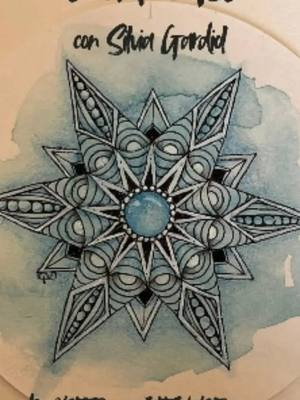
from27octPaintingZentangle: drawing to stay in the momentfrom Tuesday 27 October to Tuesday 8 December, every two weeks, 17:30–19:00Pinerolo (TO)with Silvia Gardiol at 39/ Tramediffuse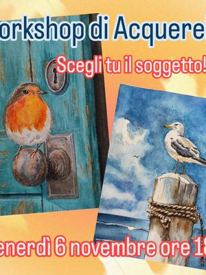
fri6novPaintingWatercolour workshop: robin or seagullFriday 6 November, 18:00Turinwith Barbara Sirtoli fri6novJewelleryRitagli Preziosi: a pendant from a collageFriday 6 November, 18:00–20:00Rivarolo Canavese (TO) · 45 €with Punto fatto a mano at UnciPazzo
fri6novJewelleryRitagli Preziosi: a pendant from a collageFriday 6 November, 18:00–20:00Rivarolo Canavese (TO) · 45 €with Punto fatto a mano at UnciPazzo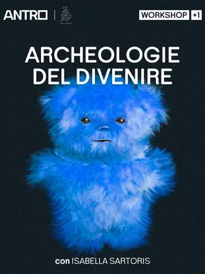
from3novPaintingArcheologie del divenire: art therapyfrom Tuesday 3 November to Wednesday 16 June, 20:30San Salvario (TO) · Freewith Isabella Sartoris at Antro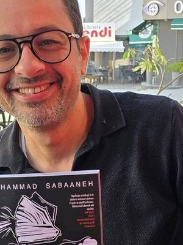
sat7novPaintingComics workshop: characters and pagesSaturday 7 November, 09:30–18:30San Paolo (TO)with Mohammad Sabaaneh at Scuola Internazionale di Comics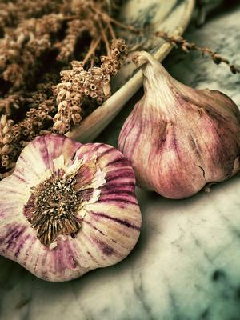
sat7novPaintingElixirs: art journal and fire ciderSaturday 7 November, 10:00–12:30Aurora (TO) · 35 €with Kiva at Velvet Truffle Riot sat7novPaintingSumi-e workshop: Japanese ink paintingSaturday 7 November, 10:30San Donato (TO) · 25 €with Più SpazioQuattro
sat7novPaintingSumi-e workshop: Japanese ink paintingSaturday 7 November, 10:30San Donato (TO) · 25 €with Più SpazioQuattro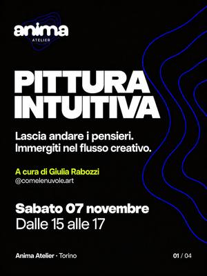
sat7novPaintingIntuitive Painting: let the colours flowSaturday 7 November, 15:00–17:00Santa Rita (TO)with Giulia Rabozzi at Anima Atelier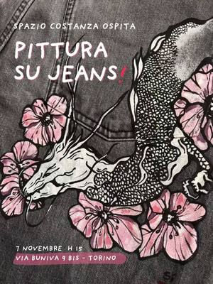
sat7novPaintingTattoo Jeans: painting on denimSaturday 7 November, 15:00–18:00Vanchiglia (TO) · 50 €with Si Performance Artistiche at Spazio Costanza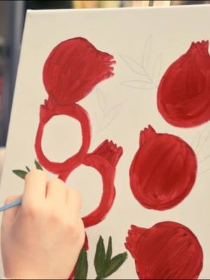
sat7novPaintingPainting on canvas: acrylics and aperitivoSaturday 7 November, 17:30Centro (TO) · 39 €with BAO NOW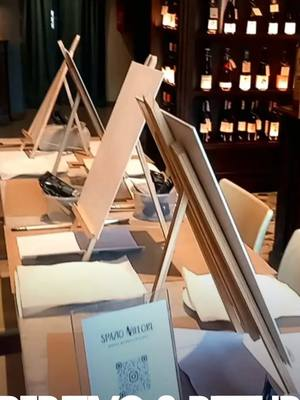
sun8novPaintingAperitivo & painting at La DrogheriaSunday 8 November, 17:00–18:30Vanchiglia (TO)with Veronica Carvelli (Spazio Nikeore)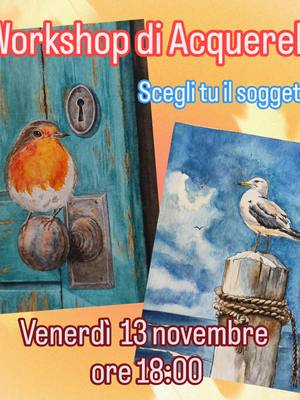
fri13novPaintingWatercolour workshop: robin or seagullFriday 13 November, 18:00Turinwith Barbara Sirtoli fri13novJewelleryRitagli Preziosi: a collage pendantFriday 13 November, 18:00–20:00Turinwith Punto fatto a mano
fri13novJewelleryRitagli Preziosi: a collage pendantFriday 13 November, 18:00–20:00Turinwith Punto fatto a mano fri13novPaintingWinter is coming: art in EnglishFriday 13 November, 18:30–20:30Cuneo (CN) · 35 €with Chantal at Atelier Crea-Arti
fri13novPaintingWinter is coming: art in EnglishFriday 13 November, 18:30–20:30Cuneo (CN) · 35 €with Chantal at Atelier Crea-Arti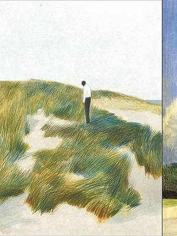
from13novPaintingAndrea Serio masterclass: pencil and pastelfrom Friday 13 November to Sunday 15 November, 18:30Lingotto (TO) · 300 € · sold outwith Andrea Serio at Print Club Torino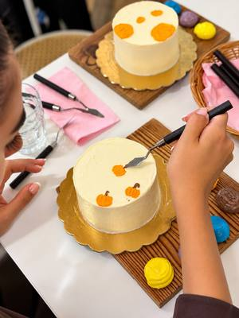
sat14novCookingCake Painting: decorate and paint a cakeSaturday 14 NovemberCentro (TO) · 50 €with Aperi Pods- from14novFor familiesLumi’s journey: emotions for childrenfrom Saturday 14 November to Saturday 12 December, every Saturday, 10:00–11:30Pinerolo (TO) · 100 €with Le Arti di Marti with Emanuela Busso
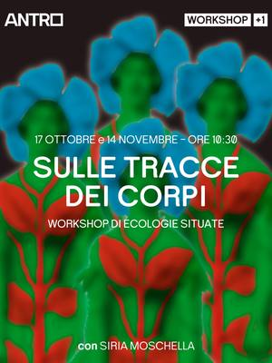
sat14novPaintingTracing bodies: a collective collageSaturday 14 November, 10:30Turin · Freewith Siria Moschella at Antro- sat14novJewelleryRitagli Preziosi: a collage broochSaturday 14 November, 15:00–17:00Turinwith Punto fatto a mano
 sun15novPaintingWatercolour workshop: Christmas cardsSunday 15 November, 10:00–12:00Cuneo (CN) · 35 €with Angelica Nolasco at Atelier Crea-Arti
sun15novPaintingWatercolour workshop: Christmas cardsSunday 15 November, 10:00–12:00Cuneo (CN) · 35 €with Angelica Nolasco at Atelier Crea-Arti- tue17novPaintingTangles: an art therapy workshopTuesday 17 November, 18:00–20:00Ivrea (TO) · 15 €with Ivonne Albertin at Open Art House
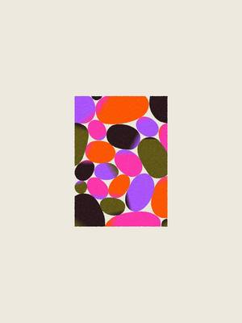
wed18novPaintingPop Collage: cut out and rearrangeWednesday 18 November, 19:00–21:30Aurora (TO) · 35 €with Arianna at Velvet Truffle Riot sat21novPaintingDecorate your tote bag: drawings and coloursSaturday 21 November, 18:30–19:30Santa Rita (TO)with Daphne at Anima Atelier
sat21novPaintingDecorate your tote bag: drawings and coloursSaturday 21 November, 18:30–19:30Santa Rita (TO)with Daphne at Anima Atelier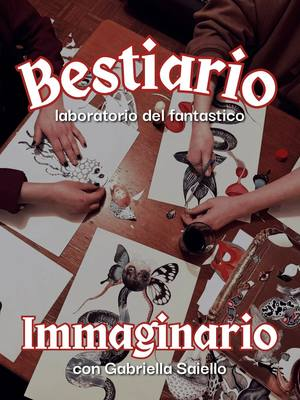
sun22novPaintingImaginary bestiary: collage workshopSunday 22 November, 17:00–19:00Vanchiglia (TO) · 25 €with Gabriella Saiello at Spazio Costanza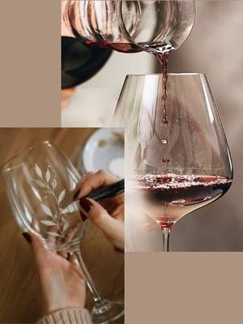
sun22novPaintingGlass painting: paint a glass, taste wineSunday 22 November, 17:00–19:00Cuneo (CN) · 35 €with Angelica Nolasco at Atelier Crea-Arti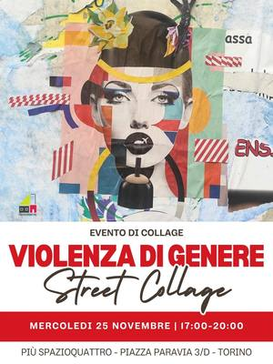
wed25novPaintingStreet collage workshop with Alice ArduinoWednesday 25 November, 17:00–20:00San Donato (TO) · Freewith Alice Arduino at Più SpazioQuattro thu26novPaintingPainting workshop: creatures on porcelainThursday 26 November, 18:00Centro (TO) · 60 €with Benedetta Faravelli at Quadratino
thu26novPaintingPainting workshop: creatures on porcelainThursday 26 November, 18:00Centro (TO) · 60 €with Benedetta Faravelli at Quadratino- fri27novJewelleryRitagli Preziosi: a collage broochFriday 27 November, 18:00–20:00Turinwith Punto fatto a mano
- sat28novPaintingBetween images and words: expressive collageSaturday 28 November, 10:00–12:00Turinwith Soraia Aguirre at Spazio IAIA
- sat28novJewelleryRitagli Preziosi: a collage pendantSaturday 28 November, 15:00–17:00Turinwith Punto fatto a mano
- sat28novPaintingDecorate your tote bag: drawings and coloursSaturday 28 November, 18:30–19:30Santa Rita (TO)with Daphne at Anima Atelier
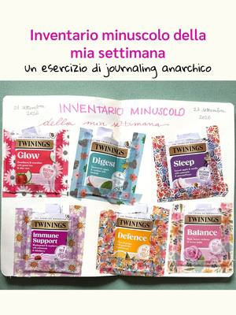
sun29novPaintingJournaling: pressed flower stickersSunday 29 November, 09:00–12:30Borgo Po (TO)with Anema e Storie e La Cerca Regali at TObed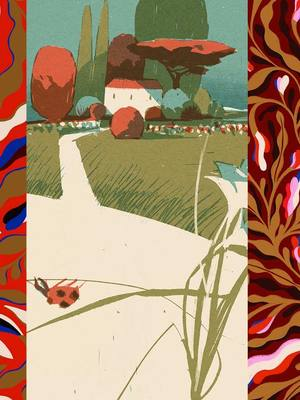
from29julPaintingGarden Chronicles: botanical drawingfrom Thursday 29 July to Sunday 1 August, 18:30Lingotto (TO) · 450 €with Riccardo Guasco e Giovanna Giuliano at Print Club Torino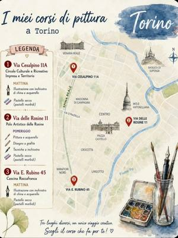
dateto be confirmedPaintingDrawing and painting courses: ink and pastelDate to be confirmedTurinwith Barbara Sirtoli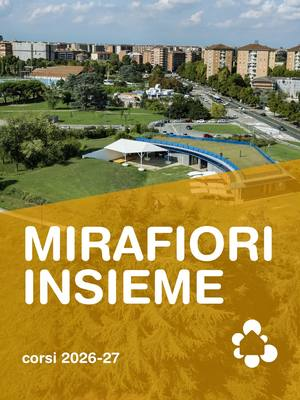
dateto be confirmedPaintingPainting course: porcelain and fabricDate to be confirmedMirafiori (TO)with Emilia Cerrato at Casa nel Parco- dateto be confirmedOtherCascina Roccafranca: this season’s coursesDate to be confirmedMirafiori (TO)with Cascina Roccafranca
- dateof your choicePaintingCreative wellbeing: breakfast and collageDate of your choiceTurin · 30 €with Kreative Club
- dateof your choicePaintingCreative gym: art for adultsDate of your choiceTurin · 30 € per lessonwith Kreative Club
- dateof your choicePaintingUrban sketching course: drawing the cityDate of your choiceTurin · 129 € for 6 lessonswith Kreative Club
 dateof your choicePaintingSip and paint: acrylics in a greenhouseDate of your choiceCampidoglio (TO) · from 55 €with Luzzi B
dateof your choicePaintingSip and paint: acrylics in a greenhouseDate of your choiceCampidoglio (TO) · from 55 €with Luzzi B dateof your choiceOtherUpholstery and restyling: poufs and furnitureDate of your choiceBarriera di Milano (TO) · from 20 €with Magazzini Tessili
dateof your choiceOtherUpholstery and restyling: poufs and furnitureDate of your choiceBarriera di Milano (TO) · from 20 €with Magazzini Tessili everytuePaintingLearn to paint: an oil painting courseEvery TuesdayMondovì (CN)with Dalid Baez at Museo Della Casa
everytuePaintingLearn to paint: an oil painting courseEvery TuesdayMondovì (CN)with Dalid Baez at Museo Della Casa dateof your choicePaintingNovel Academy: drawing and painting coursesDate of your choiceTurinwith Novel Academy
dateof your choicePaintingNovel Academy: drawing and painting coursesDate of your choiceTurinwith Novel Academy dateof your choicePaintingDrawing courses: graphite, pastel and inkDate of your choiceCentro (TO)with Barbara Sirtoli at Polo Le Rosine
dateof your choicePaintingDrawing courses: graphite, pastel and inkDate of your choiceCentro (TO)with Barbara Sirtoli at Polo Le Rosine dateof your choicePaintingManga drawing course: your own characterDate of your choiceCentro (TO)with Alice Molinaro at Polo Le Rosine
dateof your choicePaintingManga drawing course: your own characterDate of your choiceCentro (TO)with Alice Molinaro at Polo Le Rosine dateto be confirmedPaintingManga workshop: stories and comicsDate to be confirmedCentro (TO)with Wada Shinobu at Polo Le Rosine
dateto be confirmedPaintingManga workshop: stories and comicsDate to be confirmedCentro (TO)with Wada Shinobu at Polo Le Rosine dateof your choicePaintingPorcelain painting: a mixed-media courseDate of your choiceCit Turin (TO)with Scialabà
dateof your choicePaintingPorcelain painting: a mixed-media courseDate of your choiceCit Turin (TO)with Scialabà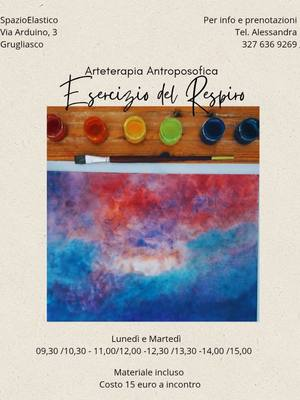
everymonPaintingAnthroposophic painting: colour and waterEvery MondayGrugliasco (TO) · 15 € per sessionwith Alessandra at Spazio Elastico- everywedPaintingArt course in English: for all agesEvery Wednesday, 15:00–16:30Cuneo (CN) · 180 € for 6 lessonswith Chantal at Atelier Crea-Arti
- everytuePaintingComics course: characters and storiesEvery Tuesday, 17:00–20:00San Mauro Torinese (TO)with Lorenzo Balocco at upTOyou
- everyfriPaintingArt course: drawing and paintingEvery Friday, 17:00–19:00San Mauro Torinese (TO)with upTOyou
 everyfriPaintingPainting course: oils and the old mastersEvery Friday, 18:00–20:00Centro (TO) · 100 € for 4 lessonswith Mery Rigo at Polo Le Rosine
everyfriPaintingPainting course: oils and the old mastersEvery Friday, 18:00–20:00Centro (TO) · 100 € for 4 lessonswith Mery Rigo at Polo Le Rosine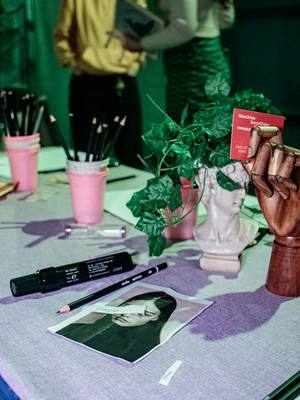
dateof your choicePaintingDrawing Club: illustration for funEvery other Wednesday, 19:00–20:30Barriera di Milano (TO) · 15 € per lessonwith Malena De Luca at Bunker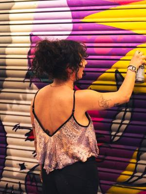
everymonPaintingGraffiti course: urban writingEvery Monday, 19:00–20:30Barriera di Milano (TO) · 20 € per lessonwith Nikka at Bunker